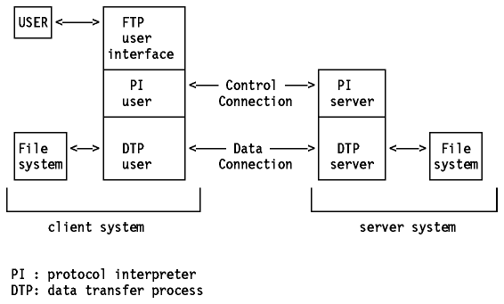
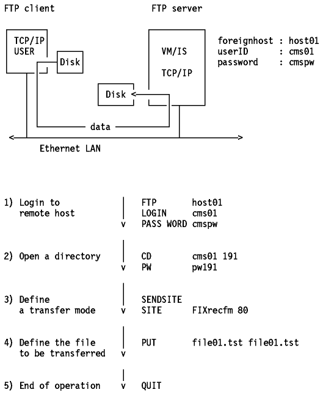

Table of Contents
Table of Contents  DOS
DOSFTP is a standard protocol with STD Number 9. Its status is recommended. It is described in RFC 959 - File Transfer Protocol (FTP).
Copying files from one machine to another is one of the most frequently used operations. The data transfer between client and server can be in either direction. The client may send a file to the server machine. It may also request a file from this server.
To access remote files, the user must identify himself to the server. At this point the server is responsible for authenticating the client before it allows the file transfer.
From an FTP user's point of view, the link is connection-oriented. In other words, it is necessary to have both hosts up and running TCP/IP to establish a file transfer.
On both sides of the link the FTP application is built with a protocol interpreter (PI), a data transfer process (DTP), and a user interface (see Figure - FTP Principle).
The user interface communicates with the protocol interpreter, which is in charge of the control connection. This protocol interpreter has to communicate the necessary information to its own file system.
On the opposite side of the link, the protocol interpreter, besides its
function of responding to the TELNET protocol, has to initiate the data
connection. During the file transfer, the data management is performed by DTPs.
After a user's request is completed, the server's PI has to close the control
connection.

Figure: FTP Principle
To execute a file transfer, the user begins by logging into the remote host. This is the primary method of handling the security. The user must have a user ID and password for the remote host, unless using Anonymous FTP which is described in Anonymous FTP.
There are three commands which are used:
When the control link is established, the user may use the cd (change directory) subcommand to select a remote directory to work with. Obviously, user can only access directories for which the remote user ID has the appropriate authorization. The user may select a local directory with the lcd (local change directory) command. The syntax of theses commands depends upon the operating system in use.
This is done using the dir or ls subcommands.
Transferring data between dissimilar systems often requires transformations of the data as part of the transfer process. The user has to decide on two aspects of the data handling:
This is controlled using two subcommands:
Because these subcommands do not cover all possible differences between systems, the SITE subcommand is available to issue implementation-dependent commands.
In order to manage these operations, the client and server conduct a dialog using the TELNET convention. The client issues commands, and the server responds with reply codes. The responses also include comments for the benefit of the user, but the client program uses only the codes.
Reply codes are three digits long, with the first digit being the most
significant.

Table: FTP Reply Codes - The second and third digits provide more
details about the response.
For each user command, shown like this, the FTP server responds with a message beginning with a 3-digit reply code, shown like this:
FTP foreignhost 220 service ready USERNAME cms01 331 user name okay PASSWORD xyxyx 230 user logged in TYPE Image 200 command okay
A LAN user has to transfer a file from his workstation
to a system running VM. The file has to be transferred from his disk to the
minidisk 191 owned by the CMS's user cms01. There is no Resource Access Control
Facility (RACF) installed. The symbolic name corresponding to an Internet
address is host01.itsc.raleigh.ibm.com.

Figure: FTP Scenario
[C:\SAMPLES]ftp host01.itsc.raleigh.ibm.com Connected to host01.itsc.raleigh.ibm.com. 220 host01 FTP server (Version 4.1 Sat Nov 23 12:52:09 CST 1991) ready. Name (rs60002): cms01 331 Password required for cms01. Password: xxxxxx 230 User cms01 logged in. ftp> put file01.tst file01.tst 200 PORT command successful. 150 Opening data connection for file01.tst (1252 bytes). 226 Transfer complete. local: file01.tst remote: file01.tst 1285 bytes received in 0.062 seconds (20 Kbytes/s) ftp> close 221 Goodbye. ftp> quit
Many TCP/IP sites implement what is known as anonymous FTP, which means that these sites allow public access to some file directories. The remote user only needs to use the login name anonymous and password guest or some other common password conventions, for example the user's Internet E-mail ID. The password convention used on a system is explained to the user during the login process.
TCP/IP for VM is implemented with server and client functions of FTP. This implementation provides you with most of the capabilities useful for file transfer. Please refer to IBM TCP/IP Version 2 Release 3 for VM: User's Guide for a list of the subcommands that may be used.
The file transfer process can be automated using the EXEC interface which allows you to read the FTP subcommands from a file (using the FILEDEF command) or from the program stack. By default, the results of your FTP dialog are printed on your terminal. A file may be defined as the output device for the FTP dialog using the FILEDEF command, in which case the dialog output is placed in the file rather than typed on the console. Please refer to the IBM TCP/IP Version 2 Release 3 for VM: User's Guide for more information about the EXEC interface.
While in an FTP session you can issue CMS commands on your local (client) VM system.
The Resource Access Control Facility (RACF) allows FTP servers to act as surrogates for other user IDs. This means that the FTP server can access those disks available to that user ID (the one entered during the logon procedure). Please refer to IBM TCP/IP Version 2 Release 3 for VM: Planning and Customization for more information about RACF considerations.
TCP/IP for MVS is implemented with both server and client functions of FTP. This implementation provides you with most of the capabilities useful for file transfer. Please refer to IBM TCP/IP Version 3 Release 1 for MVS: User's Guide for a list of the subcommands that may be used.
There are two FTP servers available in MVS:
The C FTP Server provides an FTP server specifically designed for MVS TCP/IP. In addition to providing all the functions found in the Pascal-based FTP server (except RDW), C FTP Server uses native MVS file interfaces; has a structured design; takes advantage of MP support, reducing the need for multiple servers; improves the RAS characteristics for FTP server; adds struct-r support; provides delete/catalog options if file transfer fails. The C FTP Server is available in an MVS/ESA environment only.
The C FTP Server will be the basis for future enhancements of the FTP server. No enhancements are planned for the Pascal server in further releases.
MVS FTP also supports the DATABASE 2 (DB2) SQL query function. Only the SELECT DML operation is supported. That is, other DML (INSERT, UPDATE or DELETE) and DDL operations are not supported. The SQL query may be submitted to a DB2 subsystem at either the local or the remote site, as illustrated below:
An FTP installation may also have the flexibility of defining the following user security exits: Check IP and PORT Addresses, Check USER and PASSWORD, Check the Command, and Check use of JES.
The FTP server also provides user accounting and control information using the MVS SMF (System Management Facility) records. For example, client identity, IP addresses, used commands and failed logon attempts can be recorded.
IBM TCP/IP for MVS uses SMF record type 118 for all SMF records.
The file transfer process can be automated using the EXEC interface that allows you to read the FTP subcommands from a disk (ALLOC DA(FTPIN) DD(INPUT) SHR REU) or from a program stack (QUEUE command). As the default, the results of your FTP dialog are printed on your terminal. If a disk file is defined as the output device (ALLOC DA(FTPOUT) DD(OUTPUT) SHR REU ), the dialog results go into the file. Please refer to the IBM TCP/IP Version 3 Release 1 for MVS: User's Guide for more information about the EXEC interface. You can also run FTP as a batch job, but you must supply the JCL and submit it as a job with TSO job submission facility.
While in an FTP session you can issue TSO commands on your local (client) MVS system.
The MVS FTP server allows you to interface with MVS Job Entry System (JES). First an FTP session must be established between the client and the FTP MVS server (The SET FILETYPE=JES command activates the JES interface).
The FTP server provides four functions in its JES interface:
Please refer to IBM TCP/IP Version 3 Release 1 for MVS: Customization and Administration Guide for more information about the JES interface.
Data is transmitted in a compressed format.
Both the block and the compressed transfer mode supports checkpoint/restart. When checkpointing is used, the sending side inserts checkpoint markers into the data being transmitted. Now assume that your connection breaks down in the middle of the transfer of a large file. All you have to do now is to start the FTP client again, reconnect to the server, reestablish your mode and type settings, and issue the restart command.
Both the FTP client and server functions are supported in OS/400.
FTP supports the following functions:
Since the FTP protocol limits remote FTP server subcommand names to 4 characters or less, the OS/400 FTP server supports abbreviated AS/400 CL commands. For example, CRTL is the abbreviated subcommand for CRTLIB
The FTP client can be started with the FTP or the STRCPFTP command. OS/400 files must be specified in the following format (otherwise, the default may not be the name you expect or want):
{Libraryname/}Filename.membername
AIX/6000 provides a full implementation of FTP. It supports the standard set of subcommands with the addition of NLIST, RSTATUS, RHELP, SIZE and SYSTEM. Both the client and server functions are supported, via the ftp and the ftpd programs, respectively.
The ftpd server (also known as a daemon) is a subserver controlled by the inetd subsystem (also known as the super daemon).
The $HOME/.netrc file can be used to specify automatic login information for the user ID and password to use at the foreign host. Since this file is not encrypted, the automatic login feature is not available when your AIX system has been configured with the securetcpip command.
The rcp command and the rshd server (daemon) can be used to transfer files between AIX systems. They provide two additional features: copying file attributes and copying recursively subdirectory files. Since rcp and rshd do not provide a secure environment for transferring files, they are disabled by running the securetcpip command.
The securetcpip command is used to enable additional security environments by disabling commands that are not trusted. For more information about the securetcpip command, please refer to AIX Version 3.2 for RISC System/6000 Communication Concepts and Procedures.
Both the FTP client and server functions are provided in AIX/ESA. In addition, the rcp command may also be used, if your local system is listed in the /etc/hosts.equiv file on the remote system; or, your system and your user name are listed in the .rhosts file in your home directory on the remote system.
Note: Any copy operation is subject to the AIX/ESA security features in effect. For more details, please refer to AIX/ESA Security Features User's Guide.
TCP/IP for OS/2 implements both the client and server functions of FTP.
Two files are used by the FTP to enable or automate various functions. These files are:
Here is an example of a TRUSERS file:
user: bill buffalo rd: d:\ wr: d:\tmp user: jane calamity wr^: c:\etc
Where:
Here is an example of NETRC file:
machine fsc5 login debulois password xxxxxx macdef init pwd macdef go lcd c:\work binary hash put miam.miam crunch.crunch machine reso login debulois password yyyyyyy macdef init pwd
When the command FTP fsc5 is issued the following sequence takes place:
The FTP -n fsc5 command allows you to log on to the host named fsc5 without reading the NETRC file.
These two files can be hidden by the File Manager and their location can be customized.
A Presentation Manager FTP client application is also provided (FTPPM).
The FTP server can be initiated by the INETD super server or by the ftpd command.
The High Performance File System (HPFS) is supported.
TCP/IP for OS/2 also includes an API that allows applications to have a client interface for file transfer. Applications written to this interface can communicate with multiple FTP servers at the same time (256 connections maximum). The interface also allows third-party proxy transfers between pairs of FTP servers. In addition to the FTP specific API calls, a ping() call is included to allow the application to determine whether the remote host is alive before attempting FTP transfers. The programs may be compiled and linked using the IBM C-Set/2 32-bit compiler or alternatively, the Microsoft C Compiler Version 6.0A.
The REXX FTP Application Program Interface (API) package, which is provided in the TCP/IP V2.0 for OS/2 Base Kit, provides access to the OS/2 TCP/IP FTP APIs. The REXX FTP API function names are similar to the FTP subcommands.
TCP/IP for DOS implements both the client and server functions of FTP. In particular, a DOS-based FTP server and client are provided as well as a Windows-based FTP client.
The FTP server function is implemented as a dedicated, foreground process and can support multiple concurrent FTP client sessions. It supports DOS wild card characters for multiple file transfers. Its security function is similar to that of the OS/2 implementation of a trusted users file named TRUSERS.
Once in the FTP command shell (ftp>) you can (basic FTP subcommands not included):
A file transfer from TCP/IP for DOS can be automated using a command file with the ftp -f command_file command.
TCP/IP for DOS also includes an API which allows applications to have a client interface for file transfer. Applications written to this interface can communicate with multiple FTP servers at the same time (256 connections maximum). The interface also allows third-party proxy transfers between pairs of FTP servers. In addition to the FTP specific API calls, a ping() call is included to allow the application to determine whether the remote host is alive before attempting FTP transfers.
 Domain
Name System (DNS)
Domain
Name System (DNS)